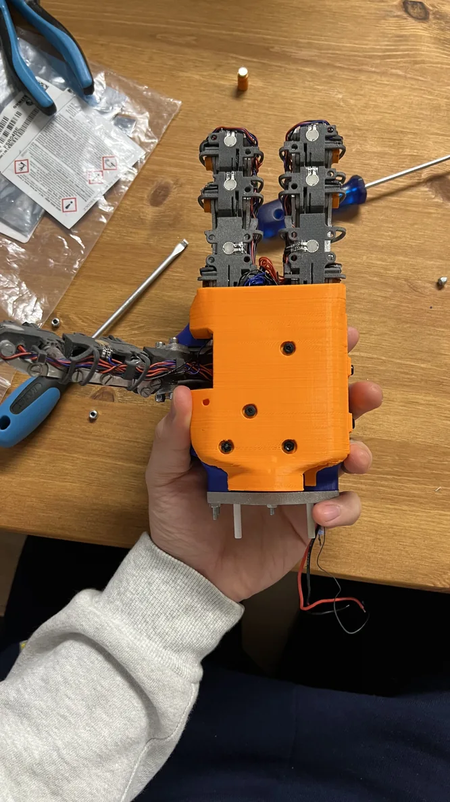
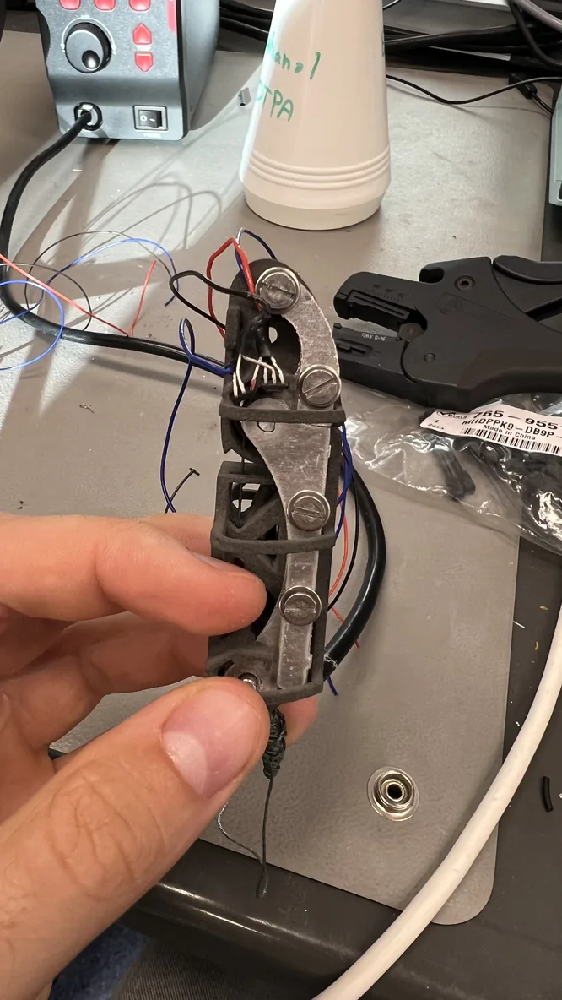
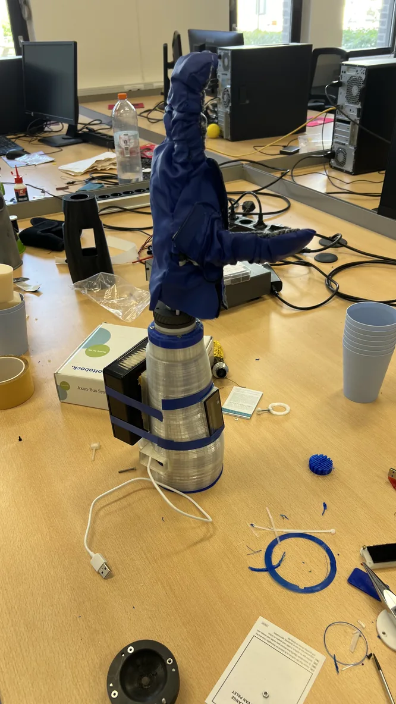
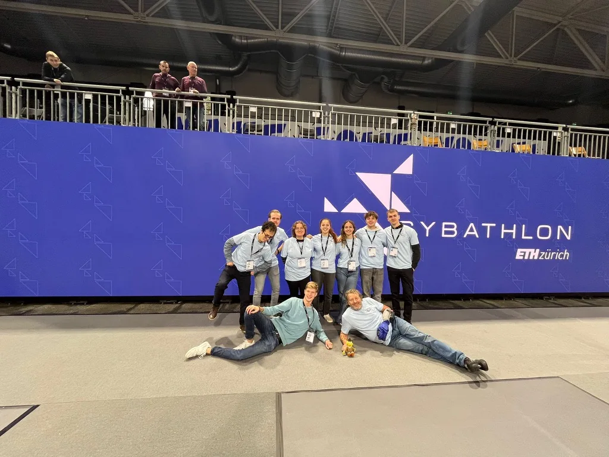
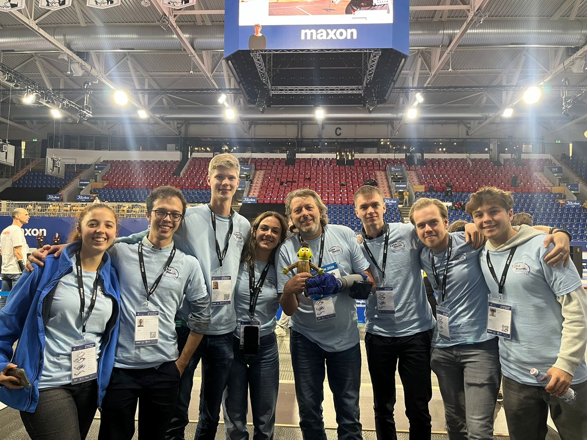

University of Groningen · CYBATHLON 2024
CybaNorth’s robotic prosthetic hand
I led the thumb actuation team for CybaNorth, a student robotics team building a prosthetic hand for our pilot, Bert.
Designing for Bert’s grip
Our goal was to design and manufacture a hand that Bert, who has a limb amputation, could use to grasp everyday objects. The thumb posed a particular challenge. A pinch needs the thumb to meet a fingertip, while a wider grip needs it to press an object against the fingers.
For my team, the biomechanics of those grips determined where the thumb needed to sit and how it needed to move.

Motor, mechanism and feedback
I was responsible for motor selection and the mechanical design of the thumb actuation mechanism. In Fusion 360, I designed a component that positioned the thumb for grasping objects of different shapes. I also integrated Hall-effect sensors into the thumb joint so we could measure its angle as it moved.
I used the Arduino IDE to work on the control electronics during prototyping. With angle feedback, we could compare the movement we commanded with the movement the joint actually made.




Taking the hand to Zürich
Our team qualified for the 2024 CYBATHLON and secured university funding to attend the event at ETH Zürich with Bert. I was one of six engineers selected to provide technical support on site.



